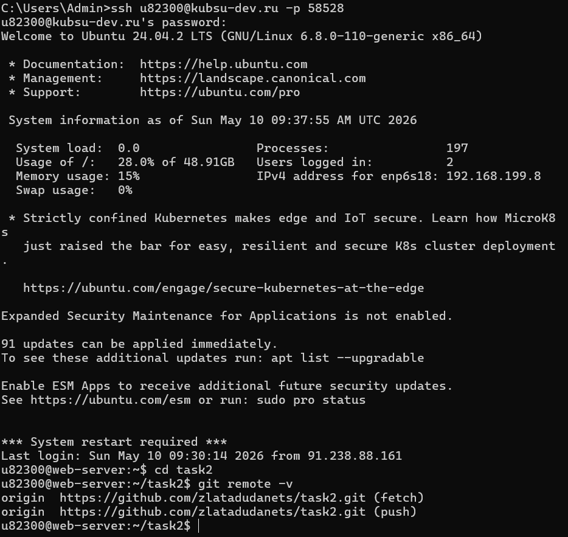
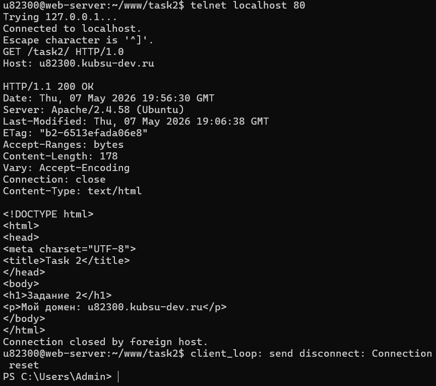
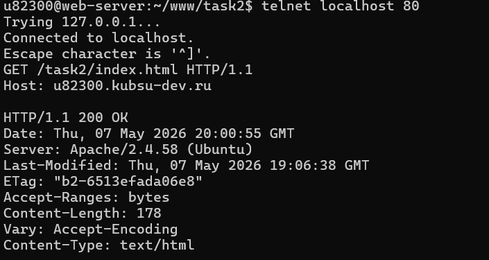
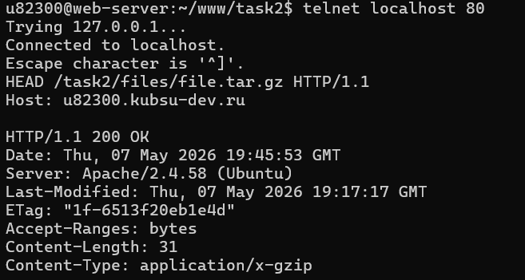
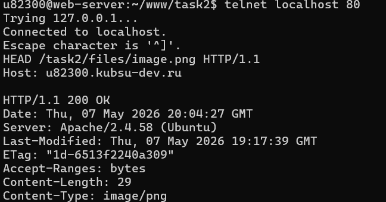
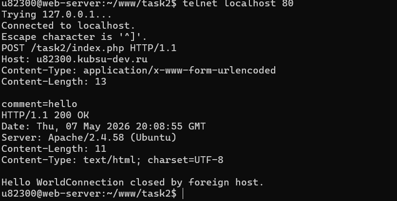
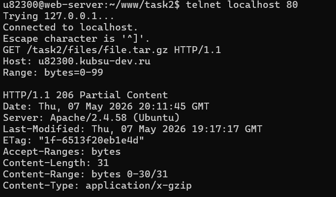
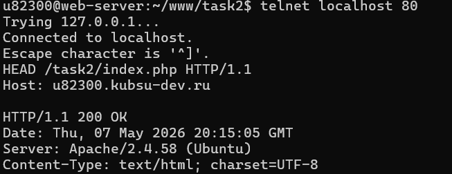

подключаемся к удаленному серверу с помощью ssh. c помощью команды cd переходим в папку. команда git clone скачиает проект с GitHub, создает папку и подключается ее к GitHub. команда git push загружает изменения на GitHub, а git pull скачивает обновления с GitHub на сервер. команда git remote -v показывает удаленный репозиторий привязан мой проект, откуда скачиваются изменеия и отправляет изменения. origin - это GitHub и используется для получения изменений и отправки изменений. fetch - для получения изменений, push-для отправки изменений. для выполнения задания мы подключаемся к ssh, переходим в папку cd www, после этого перещли в папку проекта cd task2

Здесь мы запрашиваем главную страницу сайта. Метод GET используется для получения данных с сервера. HTTP/1.0 — старая версия протокола. Host - Это имя сайта которому мы подключаемся telnet - это прошрамма для подключания к серверу вручную, localhost - это текущий компьютер, 80 - это порт HTTP
GET /task2/ HTTP/1.0 Host: u82300.kubsu-dev.ru
Ответ сервера: 200 OK

Я подключилась к веб‑серверу через telnet на порт 80. Затем вручную отправила HTTP‑запрос методом GET( это используется для получения данных с сервера, возвращает файл полностью) к файлу index.html, используя протокол HTTP/1.1 и указав заголовок Host. Сервер успешно обработал запрос и вернул ответ 200 OK, а также заголовки, содержащие информацию о типе и размере файла. ETag: - это уникальный индефикатор версии файла. Content-Type: application/x-gzip - это означает, что файл - архив gzip
GET /task2/index.html HTTP/1.1 Host: u82300.kubsu-dev.ru

Я использовала метод HEAD, чтобы получить только заголовки файла без его скачивания. В ответе сервера я получила заголовок Content-Length, который показывает размер файла в байтах. Размер файла file.tar.gz составляет 31 байт.
HEAD /task2/files/file.tar.gz HTTP/1.1 Host: u82300.kubsu-dev.ru
Размер файла: 31 байт

Я использовала метод HEAD для получения заголовков файла image.png. В ответе сервера был получен заголовок Content-Type: image/png, который указывает на медиатип файла. Это означает, что ресурс является изображением формата PNG.
HEAD /task2/files/image.png HTTP/1.1 Host: u82300.kubsu-dev.ru
Content-Type: image/png

Я использовала метод POST для отправки данных на сервер. index.php - это файл может обрабатывать отправленные данные. Content-Type - указывает тип передаваемых данных, он сообщает клиенту или серверу, как обрабатывать полученную информацию. Заголовок Content-Length указывает размер передаваемых данных. Тело запроса comment=hello, используем 13 потому что в comment=hello всего 13 символов. обязательно должна быть пустая стока между Content-Length и comment=hello. Сервер успешно обработал запрос и вернул ответ 200 OK. Content-Type - это какой тип данных отправляет сервер, text/html- тип файла,charset=UTF-8 - это кодировка страницы, что позволяет корректно отображать символы разных языков
POST /task2/index.php HTTP/1.1 Host: u82300.kubsu-dev.ru Content-Type: application/x-www-form-urlencoded Content-Length: 13 comment=hello
Ответ сервера: 200 OK

Я использовала метод GET с заголовком Range для получения части файла. Заголовок Range: bytes=0-99 указывает диапазон запрашиваемых байтов. Сервер вернул код 206 Partial Content, что означает частичную передачу файлов. В ответе содержится заголовок Content-Range, который показывает отправленный диапазон и общий размер файла.
GET /task2/files/file.tar.gz HTTP/1.1 Host: u82300.kubsu-dev.ru Range: bytes=0-99

Я использовала метод HEAD для получения заголовков (HTTP ответа) ресурса index.php. В ответе сервера был получен заголовок Content-Type: text/html; charset=UTF-8. Параметр charset указывает кодировку страницы. В данном случае используется кодировка UTF-8.
HEAD /task2/index.php HTTP/1.1 Host: u82300.kubsu-dev.ru
Кодировка: UTF-8
